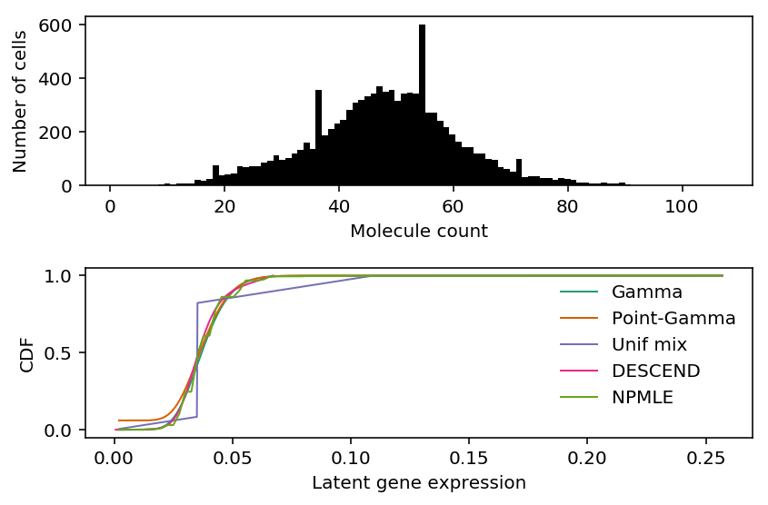

Comparison of expression deconvolution approaches
Table of Contents
Introduction
Suppose we have observations \(x_i \sim f(\theta_i), i = 1, \ldots, n\), and \(\theta_i \sim g(\cdot)\). Distribution deconvolution is the problem of estimating \(g \in \mathcal{G}\) from \(x_1, \ldots, x_n\), assuming \(f\) is known (Efron 2016).
Recent work suggests that scRNA-seq data follows this generative model (Wang et al. 2018). Here, we investigate the trade-off between model complexity/flexibility and generalization for different choices of \(\mathcal{G}\) in real data.
Setup
import colorcet import gzip import matplotlib.pyplot as plt import numpy as np import pandas as pd import scipy.io import scipy.stats as st import scipy.special as sp import rpy2.robjects.packages import rpy2.robjects.pandas2ri import rpy2.robjects.numpy2ri rpy2.robjects.pandas2ri.activate() rpy2.robjects.numpy2ri.activate() ashr = rpy2.robjects.packages.importr('ashr') descend = rpy2.robjects.packages.importr('descend')
%matplotlib inline %config InlineBackend.figure_formats = set(['retina']) plt.rcParams['figure.facecolor'] = 'w'
Methods
Distribution deconvolution
The general form of distribution deconvolution for scRNA-seq is:
\[ x_{ij} \sim \mathrm{Poisson}(\exp(\mathbf{z}_i' \mathbf{b}_j) \lambda_{ij}) \]
\[ \lambda_{ij} \sim g_j(\cdot) \]
where:
- \(x_{ij}\) is the count of molecules of gene \(j\) in cell \(i\)
- \(\mathbf{z}_i\) is a \(q\)-vector of covariates for cell \(i\)
- \(\mathbf{b}_j\) is a \(q\)-vector of confounding effects on gene \(j\)
- \(\lambda_{ij}\) is proportional to the relative abundance of gene \(j\) in cell \(i\)
The primary inference goal is to recover \(g_j\). A secondary goal could be to recover \(\lambda_{ij}\). We can trade off flexibility and complexity of \(g_j\) for ease of implementation and speed.
- Poisson: \(g_j = \delta_\mu\)
- NB: \(g_j = \mathrm{Gamma}(\cdot)\)
- ZINB: \(g_j = \pi_j \delta_0(\cdot) + (1 - \pi_j) \mathrm{Gamma}(\cdot)\)
- Generalized adaptive shrinkage: \(g_j = \sum_k \pi_k \mathrm{Uniform}(\lambda_0, a_{jk})\), where \(\lambda_0\) is the mode (jointly estimated from the data).
- DESCEND: \(g_j = \exp(\mathbf{Q}'\alpha - \phi(\alpha))\), where \(\mathbf{Q}\) is a \(5 \times K\) discretized degree 5 cubic spline.
- Nonparametric: \(g_j = \sum_k \pi_k \mathrm{Uniform}(ak, a(k + 1))\), where \(a\) is a step size.
In order to evaluate methods on their ability to estimate \(g_j\), we hold out a validation set, and score methods on validation log likelihood.
def nb_nll(x, mean, inv_disp): return (x * np.log(mean / inv_disp) - x * np.log(1 + mean / inv_disp) - inv_disp * np.log(1 + mean / inv_disp) + sp.gammaln(x + inv_disp) - sp.gammaln(inv_disp) - sp.gammaln(x + 1)) def score_nb(x_train, x_test): import scqtl onehot = np.ones((x_train.shape[0], 1)) size_factor = x_train.sum(axis=1).reshape(-1, 1) design = np.zeros((num_samples, 1)) log_mu, log_phi, *_ = scqtl.tf.fit( umi=x_train.astype(np.float32), onehot=onehot.astype(np.float32), design=design.astype(np.float32), size_factor=size_factor.astype(np.float32), learning_rate=1e-3, max_epochs=30000, verbose=True) return nb_nll(x_test, np.exp(log_mu), np.exp(-log_phi)).sum() def softplus(x): if x > 30: return x else: return np.log(1 + np.exp(x)) def zinb_nll(x, mean, inv_disp, logodds): case_zero = -softplus(-logodds) + softplus(nb_llik(x, mean, inv_disp) - logodds) case_non_zero = -softplus(logodds) + nb_llik(x, mean, inv_disp) return np.where(x < 1, case_zero, case_non_zero) def score_zinb(x_train, x_test): import scqtl onehot = np.ones((x_train.shape[0], 1)) size_factor = x_train.sum(axis=1).reshape(-1, 1) design = np.zeros((num_samples, 1)) init = scqtl.tf.fit( umi=x_train.astype(np.float32), onehot=onehot.astype(np.float32), design=design.astype(np.float32), size_factor=size_factor.astype(np.float32), learning_rate=1e-3, max_epochs=30000, verbose=True) log_mu, log_phi, logodds, nb_llik, zinb_llik = scqtl.tf.fit( umi=umi.astype(np.float32), onehot=onehot.astype(np.float32), design=design.astype(np.float32), size_factor=size_factor.astype(np.float32), learning_rate=1e-3, max_epochs=30000, warm_start=init[:3], verbose=True) return zinb_nll(x_test, np.exp(logodds), np.exp(-log_phi), logodds).sum() def score_ash(x_train, x_test): result = [] train_size_factor = pd.Series(x_train.sum(axis=1)) test_size_factor = pd.Series(x_test.sum(axis=1)) # Important: np iterates over rows for train, test in zip(x_train.T, x_test.T): lam = train / train_size_factor res0 = ashr.ash_workhorse( # Important: these are ignored by ash pd.Series(np.zeros(train.shape)), 1, # Important: numpy2ri doesn't DTRT, so we need to use pandas lik=ashr.lik_pois(y=pd.Series(train), scale=train_size_factor, link='identity'), mode=pd.Series([lam.min(), lam.max()])) res = ashr.ash_workhorse( pd.Series(np.zeros(test.shape)), 1, lik=ashr.lik_pois(y=pd.Series(test), scale=test_size_factor, link='identity'), fixg=True, g=res0.rx2('fitted_g')) result.append(np.array(res.rx2('loglik'))) return np.array(result).ravel() def score_descend(x_train, x_test): result = [] # Important: numpy2ri doesn't DTRT, so we need to use pandas train_size_factor = pd.Series(x_train.sum(axis=1)) test_size_factor = x_test.sum(axis=1).reshape(-1, 1) # Important: np iterates over rows for train, test in zip(x_train.T, x_test.T): res = descend.deconvSingle(pd.Series(train), scaling_consts=train_size_factor, verbose=False) g = np.array(descend_res.slots['distribution'])[:,:2] # Important: don't marginalize over lambda = 0 for x > 0, because p(x > 0 | # lambda = 0) = 0 case_nonzero = (st.poisson(mu=test_size_factor * g[1:,0]) .logpmf(test.reshape(-1, 1)) .dot(g[1:,1])) case_zero = (st.poisson(mu=test_size_factor * g[:,0]) .logpmf(test.reshape(-1, 1)) .dot(g[:,1])) llik = np.where(test > 0, case_nonzero, case_zero).sum() result.append(llik) return np.array(result).ravel()
Results
Homogeneous cell populations
Use sorted cells from Zheng et al. 2016 as a baseline.
def cd8_cytotoxic_t_cells(min_detect=0.25): counts = scipy.io.mmread('/project2/mstephens/aksarkar/projects/singlecell-ideas/data/10xgenomics/cd8+_cytotoxic_t_cells/filtered_matrices_mex/hg19/matrix.mtx.gz').tocsr() counts = counts[((counts > 0).mean(axis=1) >= min_detect).A.ravel()].T.A.astype(np.int) return counts def cd19_b_cells(min_detect=0.25): counts = scipy.io.mmread('/project2/mstephens/aksarkar/projects/singlecell-ideas/data/10xgenomics/cd19+_b_cells/filtered_matrices_mex/hg19/matrix.mtx.gz').tocsr() counts = counts[((counts > 0).mean(axis=1) >= min_detect).A.ravel()].T.A.astype(np.int) return counts
Look at some examples.
x = cd8_cytotoxic_t_cells() xj = pd.Series(x[:,x.mean(axis=0).argmax()]) size_factor = pd.Series(x.sum(axis=1)) lam = xj / size_factor
Fit Poisson ash.
ash_res = ashr.ash_workhorse( pd.Series(np.zeros(x.shape[0])), 1, lik=ashr.lik_pois(y=xj, scale=size_factor, link='identity'), mode=pd.Series([lam.min(), lam.max()])) ash_cdf = ashr.cdf_ash(ash_res, np.linspace(lam.min(), lam.max(), 1000))
Fit DESCEND.
descend_res = descend.deconvSingle(xj, scaling_consts=size_factor)
Fit NB/ZINB.
import numpy as np import pandas as pd import scipy.io import scqtl <<read-zheng>> x = cd8_cytotoxic_t_cells() size_factor = x.sum(axis=1).reshape(-1, 1) onehot = np.ones((x.shape[0], 1)) design = np.zeros((x.shape[0], 1)) init = scqtl.tf.fit( umi=x.astype(np.float32), onehot=onehot.astype(np.float32), design=design.astype(np.float32), size_factor=size_factor.astype(np.float32), learning_rate=1e-3, max_epochs=30000, verbose=True) pd.DataFrame(init[0]).to_csv('/project2/mstephens/aksarkar/projects/singlecell-modes/data/zheng-cd8-nb-log-mu.txt.gz', compression='gzip', sep='\t') pd.DataFrame(init[1]).to_csv('/project2/mstephens/aksarkar/projects/singlecell-modes/data/zheng-cd8-nb-log-phi.txt.gz', compression='gzip', sep='\t') log_mu, log_phi, logodds, nb_llik, zinb_llik = scqtl.tf.fit( umi=x.astype(np.float32), onehot=onehot.astype(np.float32), design=design.astype(np.float32), size_factor=size_factor.astype(np.float32), learning_rate=1e-3, max_epochs=30000, warm_start=init[:3], verbose=True) pd.DataFrame(log_mu).to_csv('/project2/mstephens/aksarkar/projects/singlecell-modes/data/zheng-cd8-zinb-log-mu.txt.gz', compression='gzip', sep='\t') pd.DataFrame(log_phi).to_csv('/project2/mstephens/aksarkar/projects/singlecell-modes/data/zheng-cd8-zinb-log-phi.txt.gz', compression='gzip', sep='\t') pd.DataFrame(logodds).to_csv('/project2/mstephens/aksarkar/projects/singlecell-modes/data/zheng-cd8-zinb-logodds.txt.gz', compression='gzip', sep='\t')
sbatch --partition=gpu2 --gres=gpu:1 --mem=16G --time=60:00 --job-name=fit-nb #!/bin/bash source activate scmodes python /project2/mstephens/aksarkar/projects/singlecell-modes/code/fit-nb.py
Submitted batch job 58803475
j = str(x.mean(axis=0).argmax()) nb_log_mu = pd.read_csv('/project2/mstephens/aksarkar/projects/singlecell-modes/data/zheng-cd8-nb-log-mu.txt.gz', sep='\t') nb_log_phi = pd.read_csv('/project2/mstephens/aksarkar/projects/singlecell-modes/data/zheng-cd8-nb-log-phi.txt.gz', sep='\t') # Gamma (Use MATLAB and MATHEMATICA (b=theta=scale, a=alpha=shape) definition) # https://github.com/scipy/scipy/blob/v1.2.1/scipy/stats/_continuous_distns.py#L2479 gamma_cdf = st.gamma(a=np.exp(-nb_log_phi[j]), scale=np.exp(nb_log_mu[j] + nb_log_phi[j])).cdf(np.linspace(lam.min(), lam.max(), 1000))
zinb_log_mu = pd.read_csv('/project2/mstephens/aksarkar/projects/singlecell-modes/data/zheng-cd8-zinb-log-mu.txt.gz', sep='\t') zinb_log_phi = pd.read_csv('/project2/mstephens/aksarkar/projects/singlecell-modes/data/zheng-cd8-zinb-log-phi.txt.gz', sep='\t') zinb_logodds = pd.read_csv('/project2/mstephens/aksarkar/projects/singlecell-modes/data/zheng-cd8-zinb-log-phi.txt.gz', sep='\t') point_gamma_cdf = st.gamma(a=np.exp(-zinb_log_phi[j]), scale=np.exp(zinb_log_mu[j] + zinb_log_phi[j])).cdf(np.linspace(lam.min(), lam.max(), 1000)) point_gamma_cdf *= sp.expit(-zinb_logodds[j].values) point_gamma_cdf += sp.expit(zinb_logodds[j].values)
cm = plt.get_cmap('Dark2').colors fig, ax = plt.subplots(2, 1) ax[0].hist(xj, bins=100, color='k') ax[0].set_xlabel('Molecule count') ax[0].set_ylabel('Number of cells') ax[1].plot(np.array(ash_cdf.rx2('x')), np.array(ash_cdf.rx2('y')).ravel(), c=cm[0], lw=1, label='Unif mix') F = np.cumsum(np.array(descend_res.slots['density.points'])[:,1]) ax[1].plot(np.array(descend_res.slots['density.points'])[:,0], F / F.max(), c=cm[1], lw=1, label='DESCEND') ax[1].plot(np.linspace(lam.min(), lam.max(), 1000), gamma_cdf, color=cm[2], lw=1, label='Gamma') ax[1].plot(np.linspace(lam.min(), lam.max(), 1000), point_gamma_cdf, color=cm[3], lw=1, label='Point-Gamma') ax[1].set_xlabel('$\lambda$') ax[1].set_ylabel('CDF') ax[1].legend(frameon=False) fig.tight_layout()

Synthetic cell mixtures
Real cell mixtures
def pbmcs_68k(min_detect=0.25): counts = scipy.io.mmread('/project2/mstephens/aksarkar/projects/singlecell-ideas/data/10xgenomics/68k_pbmcs/filtered_matrices_mex/hg19/matrix.mtx.gz').tocsr() counts = counts[((counts > 0).mean(axis=1) >= min_detect).A.ravel()].T.A.astype(np.int) return counts def cortex(): counts = pd.read_table('/project2/mstephens/aksarkar/projects/singlecell-ideas/data/zeisel-2015/GSE60361_C1-3005-Expression.txt.gz', index_col=0) # Follow scVI here return counts.loc[counts.var(axis=1).sort_values(ascending=False).head(n=500).index].values.T